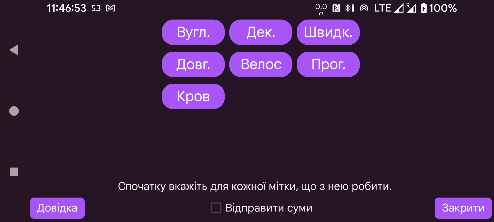

Увімкніть «Відправити суми», щоб надсилати значення до LibreView. Перш ніж увімкнути «Відправити суми», потрібно для кожної мітки вказати, як введені під нею значення слід надсилати до LibreView. Самі мітки можна створювати, змінювати й видаляти через ліве меню→Налаштування→«Числові етикетки».
Для міток, які надсилаються до LibreView як коментарі, діє таке обмеження: після зміни мітки видалення й редагування значень, введених під попередньою міткою, не передаватимуться до LibreView. Наприклад, якщо раніше була мітка «Велосипед» зі значенням 20, потім її перейменовано на «Їзда на велосипеді», а 20 змінено на 25, у LibreView залишаться і «Велосипед 20», і «Їзда на велосипеді 25». Єдиний спосіб виправити це — видалити поточні пристрої в LibreView і натиснути Повторно надіслати дані у Juggluco.